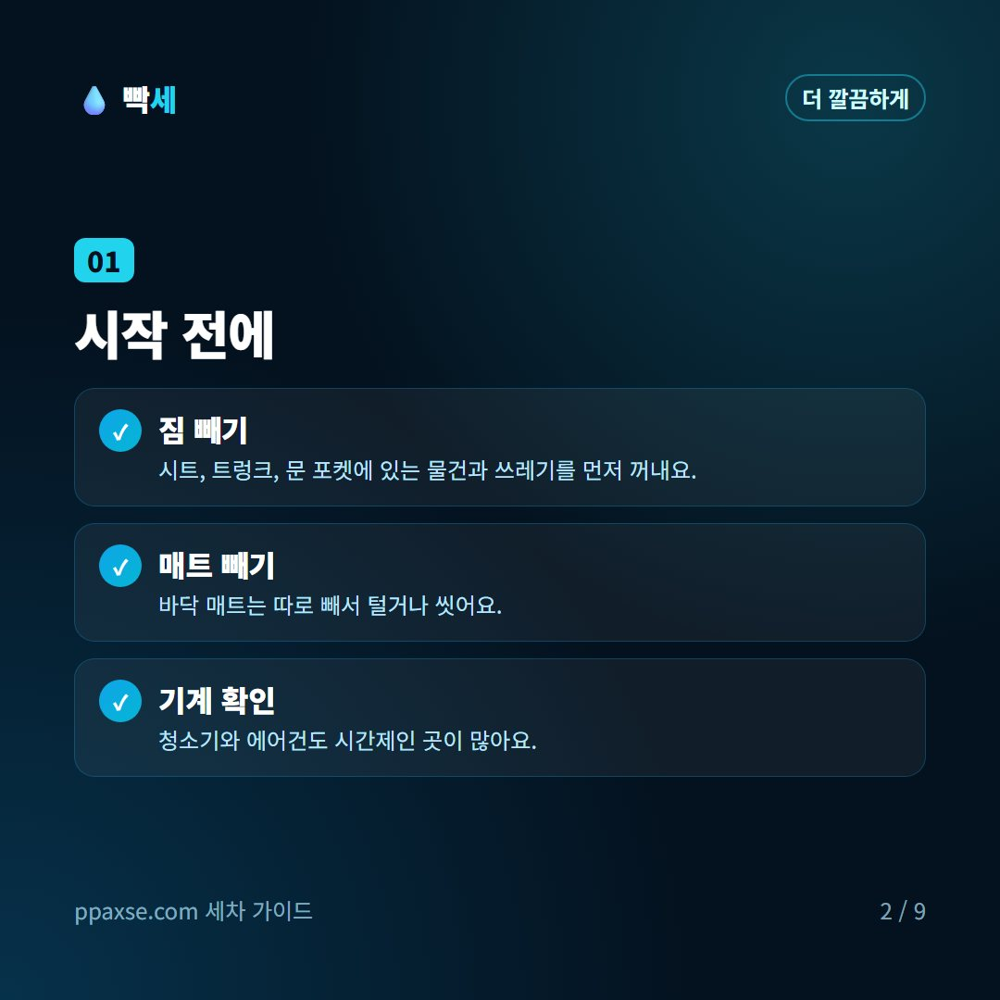
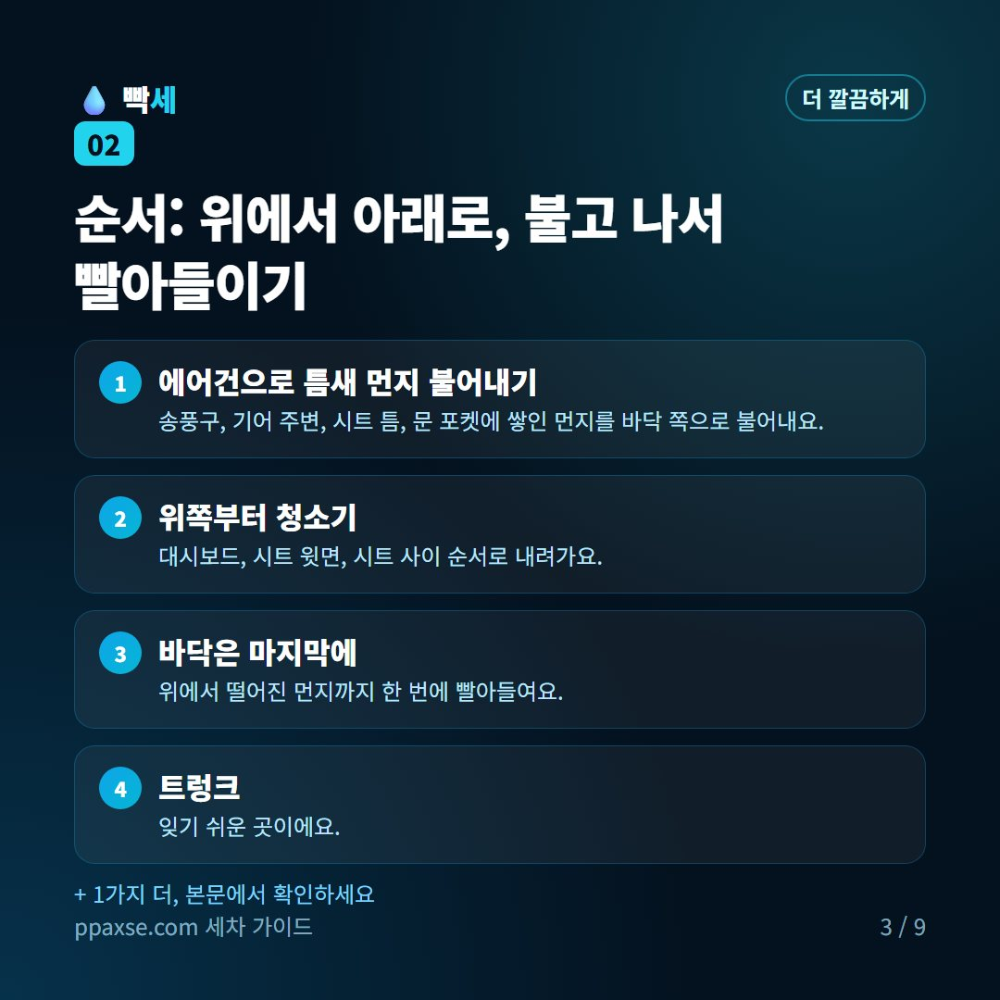

셀프세차장에서 실내 세차까지 — 청소기·에어건 쓰는 요령
2026-11-24 · 빡세 세차 가이드
셀프세차장에는 외부 세차 기계뿐 아니라 실내 청소기, 에어건, 매트 세척기가 있는 곳이 많아요. 외부 세차를 마친 김에 실내까지 정리하면 차 타는 기분이 확 달라져요. 이 글은 셀프세차장에서 할 수 있는 실내 정리 순서를 정리한 거예요.
시작 전에

- 짐 빼기 — 시트, 트렁크, 문 포켓에 있는 물건과 쓰레기를 먼저 꺼내요. 생각보다 시간이 많이 줄어요.
- 매트 빼기 — 바닥 매트는 따로 빼서 털거나 씻어요.
- 기계 확인 — 청소기와 에어건도 시간제인 곳이 많아요. 외부 세차처럼 순서를 정해 두고 시작하세요.
순서: 위에서 아래로, 불고 나서 빨아들이기

- 에어건으로 틈새 먼지 불어내기 — 송풍구, 기어 주변, 시트 틈, 문 포켓에 쌓인 먼지를 바닥 쪽으로 불어내요.
- 위쪽부터 청소기 — 대시보드, 시트 윗면, 시트 사이 순서로 내려가요.
- 바닥은 마지막에 — 위에서 떨어진 먼지까지 한 번에 빨아들여요. 시트를 앞뒤로 밀어 가며 아래쪽까지 해요.
- 트렁크 — 잊기 쉬운 곳이에요.
- 닦기 — 대시보드, 핸들, 문 손잡이를 실내용 타월로 닦아요.
💡 에어건은 사람이나 얼굴 쪽으로 향하지 않게 해 주세요. 옆 자리에 사람이 있다면 방향도 신경 써 주세요.
매트 관리
- 고무 매트는 고압수로 씻고 세워서 물을 빼요.
- 카펫 매트는 털이개나 매트 세척기로 털고, 젖었다면 충분히 말린 뒤 깔아요. 젖은 채로 깔면 냄새가 날 수 있어요.
소재별로 조심할 점
- 가죽 시트 — 물을 많이 쓰지 말고, 가죽용 제품을 쓰는 게 좋아요.
- 디스플레이, 피아노 블랙 패널 — 흠집이 잘 나요. 깨끗한 극세사 타월로 살살 닦아요.
- 처음 쓰는 클리너는 눈에 안 띄는 곳에 먼저 써 보고 변색이 없는지 확인해요.
외부 세차와 함께라면
외부 세차를 먼저 하고, 드라잉존에서 물기를 닦은 뒤 실내 정리로 넘어가는 분들이 많아요. 외부 세차 순서는 셀프세차장 처음 가는 날, 타월 고르는 법은 드라잉 타월 고르는 법과 세탁법에 정리했어요.
청소기 좋은 세차장, 함께 알려 주세요
청소기 흡입력, 에어건 유무, 매트 세척기 상태는 세차장마다 정말 달라요. 같은 세차장 안에서도 자리마다 다르기도 하고요. 다녀온 세차장의 실내 청소 시설 이야기를 빡세에 한마디로 남겨 주세요. 지역별 목록은 지역별 세차장 모음에서 볼 수 있어요.
🗺️ 우리 동네 세차장, 지도에서 한눈에 보세요
☀️ 오늘 세차하기 좋은 날일까요?
날씨 보고 세차할 날 고르기10일 달력 보기 ›
셀프세차·노터치·손세차를 종류별로 골라 보고, 폼건·온수·하부세차 같은 시설 정보도 확인할 수 있어요.
🗺️ 세차장 지도 열기✏️ 자주 가는 세차장에 한마디 남기기🎁 한마디를 남기면 가입 없이도 매주 기프티콘 추첨에 응모돼요.